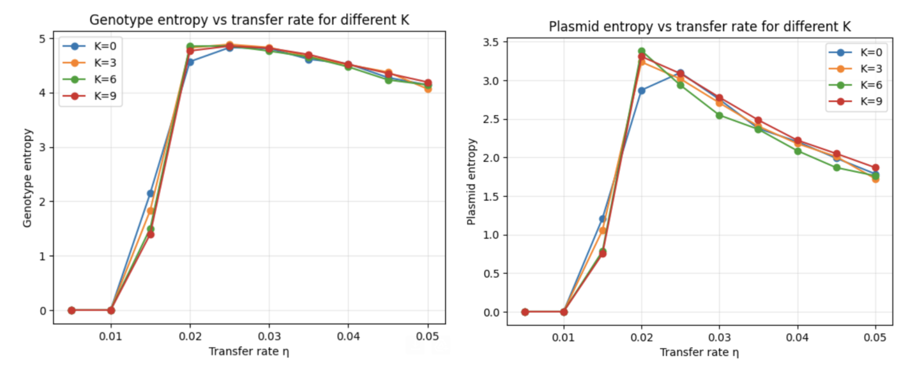
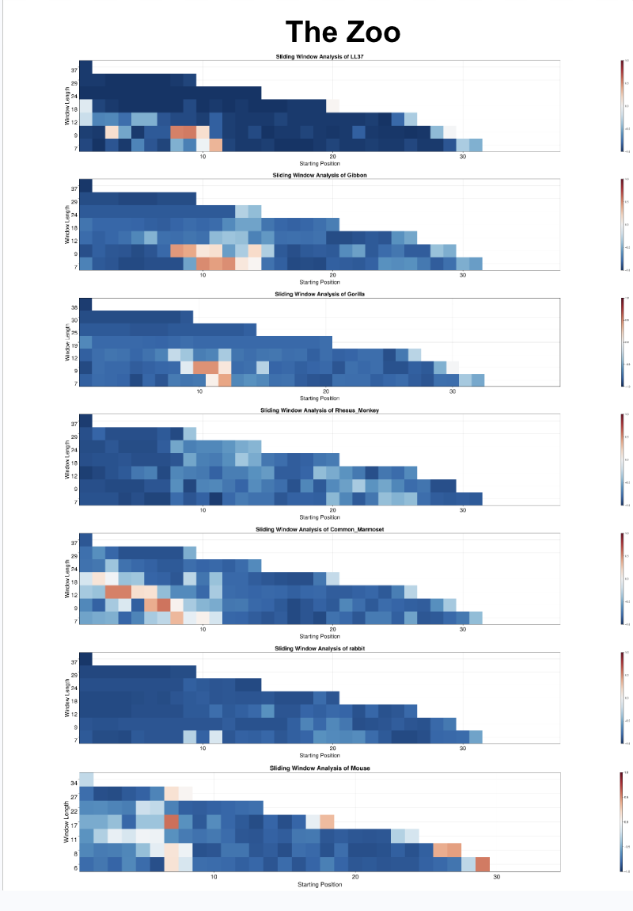
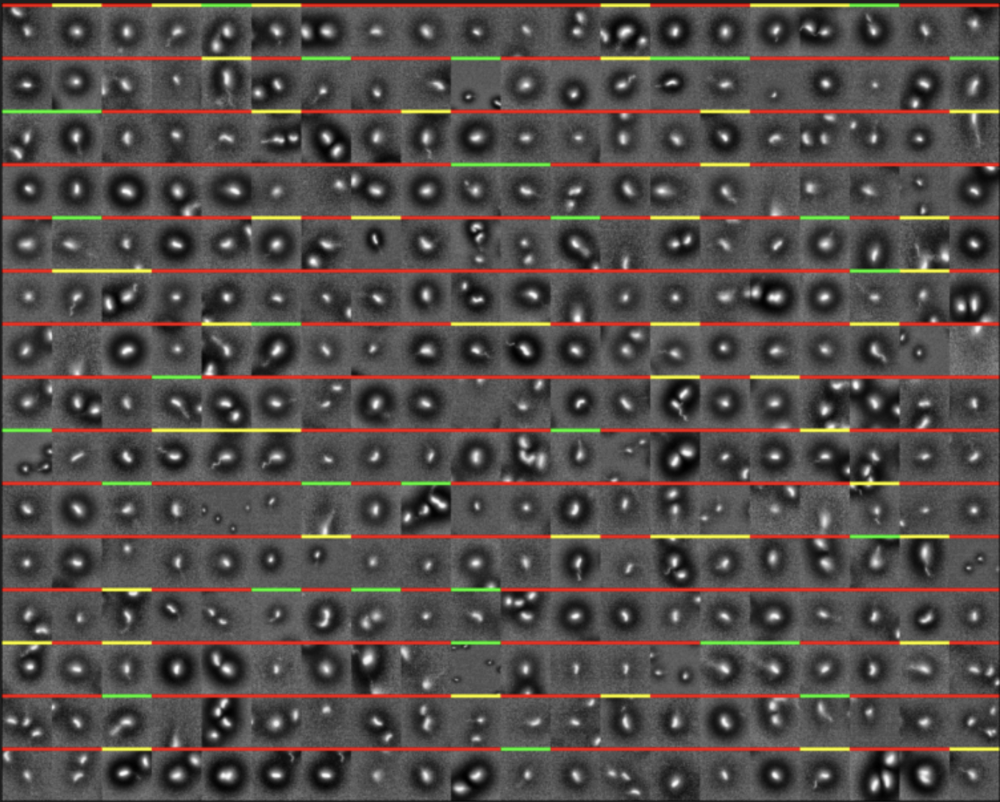
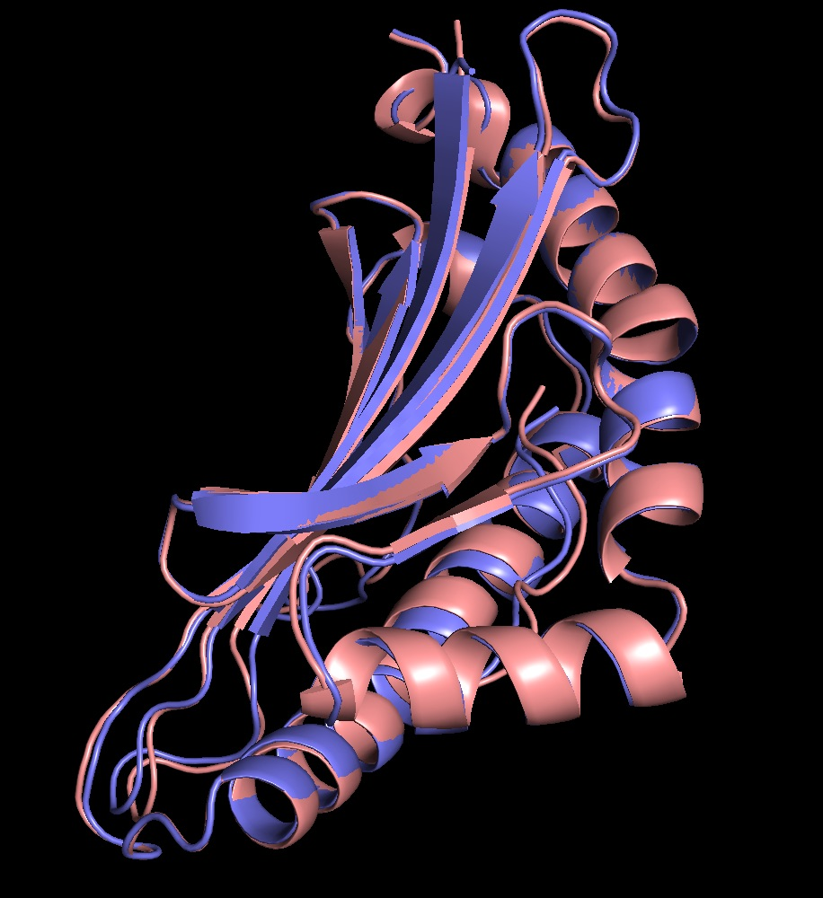

Yuta Kiami
Engineering • Physics • Computation
About Me
I'm a third-year student at UCLA studying Physics and Bioengineering, working at the intersection of computational methods, engineering design, and the natural sciences. I enjoy learning and thinking at the scientific level while applying my knowledge and skills to solve real-world problems, whether that's better understanding the physics of antimicrobial peptides with ML, or restoring music playing for those who have lost hand mobility. Looking forward, I hope to grow my technical experience through industry roles with teams building something new. Outside the lab, I play cello, enjoy cooking, and spend as much time as I can skiing or outdoors.
Resume
Projects
SSVEP Brain-Computer Interface Piano Player
BCI
EEG
FBTRCA
Python
Signal Processing
UI/UX
Real-Time Classification
- Built a brain-computer interface system allowing users to play piano notes hands-free by gazing at flickering visual stimuli (SSVEP).
- Developed an integrated UI combining an EEG data collection interface and a live classification display, enabling seamless transitions between training and performance modes.
- Implemented and trained Filter Bank Task-Related Component Analysis (FBTRCA), a state-of-the-art SSVEP decoding algorithm, achieving robust multi-class frequency discrimination.
- Mapped decoded SSVEP frequencies to piano notes, triggering audio playback with EMG to create a fully functional BCI musical instrument.
- Iterated filter bank parameters and epoch lengths to maximize accuracy.
Epistasis in Plasmid Horizontal Gene Transfer
Evolutionary Biology
NK Landscapes
Gillespie Algorithm
Monte Carlo
Python
Stochastic Simulation
Epistasis
Numba
NumPy
Pandas
- Investigating how epistasis, non-additive interactions between plasmids, shapes the dynamics of horizontal gene transfer (HGT) via plasmids in bacterial populations.
- Modeling fitness landscapes using the NK framework, tuning the epistasis parameter K to produce landscapes ranging from smooth and additive to highly rugged and multipeaked.
- Simulating population-level evolutionary dynamics using the Gillespie and Monte Carlo algorithms for stochastic kinetics, capturing birth, death, mutation, and plasmid transfer events at the individual level.
- Systematically iterating over landscape ruggedness, transfer rate, and population size parameters to map out how HGT interacts with epistatic structure to facilitate or impede adaptation.
- Probing whether plasmid-mediated gene transfer acts as an escape mechanism from local fitness peaks on rugged landscapes, and under what epistatic regimes HGT is most evolutionarily advantageous.

TruBalance Stand
Constraint-Driven Design
Jupyter
SolidWorks
Prototyping
3D Printing
- Creating a rigid tablet stand defined by a curve that rests at static equilibrium for any angle at which the stand can be placed.
- Considered physical and geometrical constraints to work out an initial design concept, reducing to only two constraint equations.
- Used Jupyter to numerically solve for constrained parameters, allowing for easy material and dimensional customizability.
- Modeled the design in SolidWorks to allow prototyping.
- Currently creating prototypes using 3D printing, making practical and design improvements with each iteration.
Peptide Curvature VAE Pipeline
VAE
KNN
Julia
Bash
Dimensionality Reduction
Bioinformatics
- Automated a pipeline to splice peptide sequences into overlapping segments of varying lengths, enabling sub-sequence level analysis of membrane curvature affinity.
- Passed spliced segments through a Variational Autoencoder (VAE) to produce low-dimensional embeddings encoding the physical and biochemical properties of each peptide fragment.
- Applied a K-Nearest Neighbors classifier in the VAE latent space to assign each segment a negative Gaussian curvature (NGC) or positive Gaussian curvature (PGC) affinity score based on proximity to labeled reference peptides.
- Visualized classification results across peptide length to provide interpretable, position-resolved curvature profiles for downstream analysis.
- Automated the full workflow end-to-end using Julia and Bash scripting, enabling rapid throughput across large peptide libraries.

Flagellum Image Classification
CNN
Julia
Pluto
Image Processing
Bash
- Built a deep learning pipeline to classify 10,000+ bacterial images with high throughput and reproducibility.
- Designed a streamlined interface for manual labeling, enabling 600+ images/hour for training data generation.
- Tuned model architectures to boost accuracy and training efficiency, achieving 50%+ accuracy improvements.
- Experimented with diverse datasets and processing, boosting model accuracy by 30%.

EEG Seizure Detection
DWT
Jupyter
SciPy
SVM
PCA
- Used machine learning methods to create software that automatically classifies EEG as seizure/non-seizure.
- Processed the signals two ways: one using DWT (discrete wavelet transform) and the other using PCA.
- Used SVM to classify EEG signals, achieving 96% accuracy, 90% precision, and 90% recall.
TCR-β Design Pipeline
Jupyter
Bash
AlphaFold
OmegaFold
ESMFold
Pandas
NumPy
Matplotlib
- Partnered with a startup and applied my method to design a linker for a TCR-beta structure that could create drug delivery that is more specific, and navigates the body with greater efficiency.
- Developed a method to computationally design and evaluate 1300+ protein linkers for TCR complexes using AlphaFold, ESMFold, RoseTTAFold, and OmegaFold, facilitating in vitro testing.
- (Reach out for GitHub repository.)
